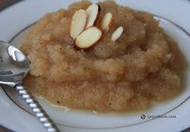

Home
Halwa

Suji ka halwa is your classic everyday delicious North Indian sweet made with fine semolina or cream of wheat (farina), sugar, ghee, nuts and flavored with cardamom powder. In Maharashtra, this sweet is called as Sheera. Semolina is called as suji, sooji or rava. This easy melt-in-the-mouth halwa recipe comes together in about 15 minutes. The recipe I share is a family heirloom recipe that we have been making for decades during family get-togethers, special occasions and festivals.
- Sugar
- Ghee
- Water
- cream of wheat (farina)
- nuts
- cardamom powder
How to Make Halwa
- Roast Suji or Rava
1. Heat ⅓ cup ghee in a kadai or a thick bottomed pan. Keep the heat to a low or medium-low. Use a heavy pan or else there is a risk of the suji getting burnt.
- Make Sugar Syrup“.
- Add ½ cup sooji (rava or semolina). Use a fine variety of sooji and not the coarser variety.
- Also add 10 to 12 cashews halved or whole.
adding cashews
- Mix very well and start roasting the sooji and cashews.
- Keep on stirring the sooji so that the grains do not stick to the pan and are roasted evenly.
- oast sooji till you can see the ghee getting separated and when you see the cashews getting golden. The color of the suji or rava should not become brown. There will also be a fragrant aroma of suji and ghee in your kitchen.
- ext add ½ teaspoon cardamom powder
- pour the boiling and bubbling sugar syrup in the ghee & sooji mixture slowly, with continuous stirring.
Pour carefully, as the mixture sizzles and splutters.
- stir it well